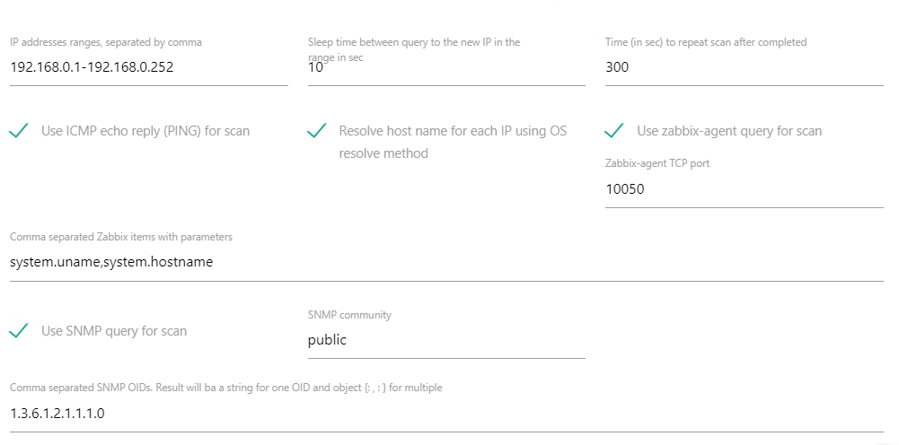

Описание Objects discovery
Сборщик позволяет организовать обнаружение хостов в сетях для автоматического формирования системы мониторинга для инфраструктуры.
Параметры
- IP addresses ranges, separated by comma - Список диапазонов IPv4 или IPv6 адресов для обнаружения хостов в формате <firstIP1>-<lastID1>, <firstIP2>-<lastID2>, <IP3>, ... Например, 192.168.0.1-192.168.0.252, 192.168.0.254, 172.10.0.1-172.10.5.254
- Sleep time between query to the new IP in the range in sec - Пауза в секундах между попытками поиска хостов. Служит для распределения задач по времени. В случае обнаружения нескольких объектов подряд, если за паузу задачи для обработки данных выполниться не успели, они продолжат выполняться вместе с задачами, запущенными после обнаружения следующего хоста. Нагрузка может возрасти, что может привести к задержкам в работе системы. Для того, чтобы этого избежать, рекомендуется устанавливать временные паузы между обнаружениями новых хостов.
- Time (in sec) to repeat scan after completed - Пауза в секундах между повторным сканированием диапазона. 0 - сканировать один раз
- Use ICMP echo reply (PING) for scan - Проверять доступность хоста по протоколу ICMP (ping). Для проверки отправляется 2 пакета, используется внешняя программа ping
- Resolve host name for each IP using OS resolve method - Пытаться определить имя хоста
- Use zabbix-agent query for scan - Пытаться выполнить запрос к Zabbix агенту, установленному на хосте
- Zabbix-agent TCP port - TCP порт Zabbix агента
- Comma separated Zabbix items with parameters - Список ключей и параметров через запятую, по которым будут запрашиваться данные у Zabbix агентов
- Use SNMP query for scan - Пытаться сделать запрос к хосту по протоколу SNMP
- SNMP community - SNMP community (обычно public)
- Comma separated SNMP OIDs. Result will ba a string for one OID and object
{
: , : } for multiple - OID или несколько OID'ов SNMP, перечисленных через запятую
Настройки
Настройки сборщика хранятся в файле settings.json
- discoveryIP - путь до файлов в которых сохраняется текущее состояние счетчиков. В качестве суффикса к файлам добавляется идентификатор objectCounterID счетчиков.
Возвращаемое значение
Сборщик последовательно опрашивает каждый IP адрес из диапазонов и возвращает объект, содержащий найденную информацию о каждом хосте:
- hostname - если указан параметр getHostname и удалось определить название хоста, то параметр будет содержать название хоста
- SNMP - если указан useSNMP и от хоста пришел ответ на SNMP запрос, параметр будет содержать этот ответ. Если SNMP OID было несколько, то параметр будет содержать объект, где в качестве ключей будут OID'ы, а в качестве их значений - полученные по SNMP ответы.
- zabbix - если указан useZabbix и от хоста пришел ответ на запрос к Zabbix агенту, параметр будет содержать этот ответ. Если ключей для Zabbix агента было несколько, то параметр будет содержать объект, где в качестве ключей будут ключи Zabbix агента, а в качестве их значений - полученные от Zabbix агента ответы.
- ping - если указан параметр usePing, то 1 если хост ответил на ping, 0 если нет.
- IP - IP адрес проверяемого хоста
По окончанию сканирования диапазона адресов сборщик возвратит объект: {"scanTime": <Время сканирования в миллисекундах>}
Пример возвращаемого значения для следующих настроек сканирования:
{
"hostname": "alepiz.com",
"SNMP": "Hardware: Intel64 Family 6 Model 85 Stepping 4 AT/AT COMPATIBLE - Software: Windows Version 6.3 (Build 14393 Multiprocessor Free)",
"zabbix": {
"system.hostname": "ALEPIZ",
"system.uname": "Windows ALEPIZ 10.0.14393 Microsoft Windows Server 2016 Standard x64"
},
"ping": 1,
"IP": "192.168.0.1"
}В работать с полученным объектом JSON, можно с помощью встроенной в ALEPIZ функции getValueFromJSOMStr(JSONStr, keys):
- getValueFromJSONStr(%:PARENT_VALUE:%, "hostname") = alepiz.com
- getValueFromJSONStr(%:PARENT_VALUE:%, "IP") = 192.168.0.1
- getValueFromJSONStr(%:PARENT_VALUE:%, 'zabbix:system.hostname') = ALEPIZ